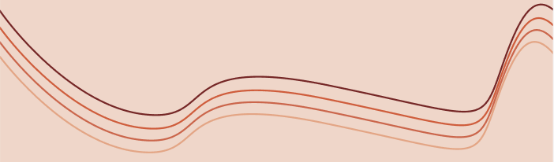

Het concept
BijOns Vintage is een bedrijf dat gespecialiseerd is in het verkopen van vintage kleding. Het concept is gebaseerd op het bieden van unieke en nostalgische kledingstukken aan klanten die een voorkeur hebben voor vintage mode.
Het bedrijf selecteert zorgvuldig de kledingstukken die voldoen aan de hoge kwaliteitsnormen en de stijlvereisten van de vintage mode. Ze kunnen variëren van kledingstukken uit de jaren '60 tot de jaren '90 en bieden een breed scala aan stijlen, zoals retro, boho, rockabilly en nog veel meer.
De focus van BijOns Vintage ligt op duurzaamheid en het creëren van een circulaire modeketen. Ze geven de voorkeur aan het recyclen van kleding en het verminderen van textielafval door middel van hergebruik. Hierdoor dragen ze bij aan het verminderen van de milieu-impact van de mode-industrie.
